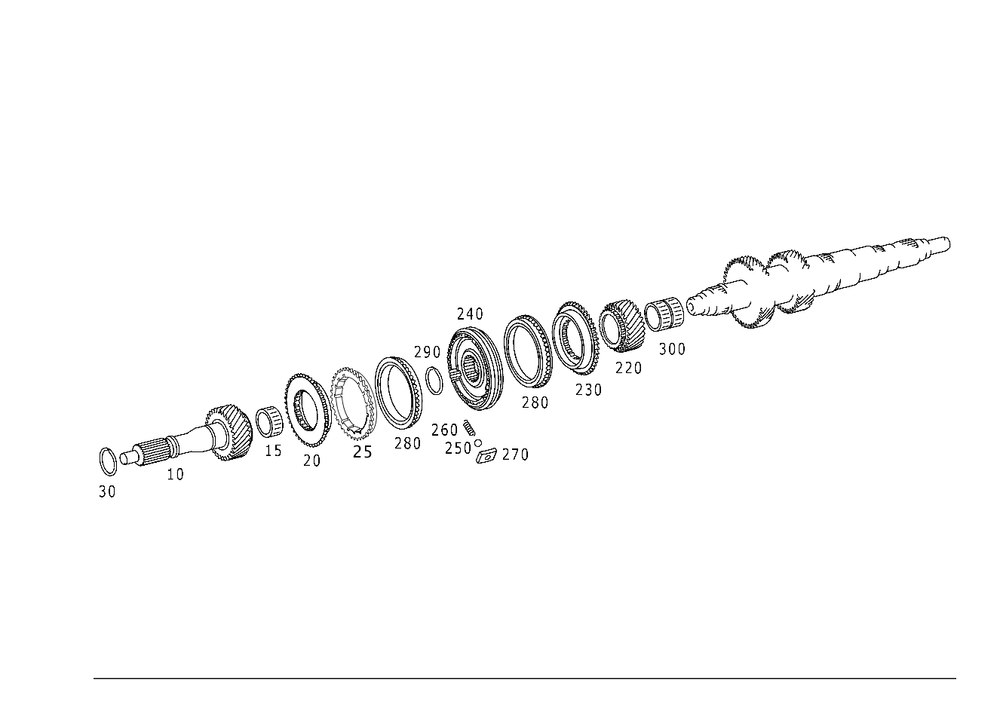

| № | Артикул | Название | Кол. | Примечание |
|---|---|---|---|---|
| 10 | A 211 262 05 02 | - Приводной вал (DRIVE SHAFT) | 1 | |
| 15 | A 021 981 95 10 | - Игольчатый подшипник (NEEDLE ROLLER BEARING) | 1 | Приводной вал |
| 20 | A 211 262 07 35 | - Синхронизатор (SYNCHRONIZER BODY) | 1 | 5-я и 6-я передача |
| 25 | A 203 262 21 34 | - Кольцо синхронизатора (SYNCHRONIZER RING) | 1 | 5-я и 6-я передача |
| 25 | A 204 262 01 34 | - Кольцо синхронизатора | 1 | 5-я и 6-я передача |
| 30 | A 203 994 12 35 | - Пруж. стопорное кольцо (SNAP RING) | 1 | Опора привода 1.70 MM; 1,70MM |
| 30 | A 203 994 13 35 | - Пруж. стопорное кольцо (SNAP RING) | 1 | Опора привода 1.75 MM; 1,75MM |
| 30 | A 203 994 14 35 | - Пруж. стопорное кольцо (SNAP RING) | 1 | Опора привода 1.80 MM; 1,80MM |
| 30 | A 203 994 15 35 | - Пруж. стопорное кольцо (SNAP RING) | 1 | Опора привода 1.85 MM; 1,85MM |
| 30 | A 203 994 16 35 | - Пруж. стопорное кольцо (SNAP RING) | 1 | Опора привода 1.90 MM; 1,90MM |
| 30 | A 203 994 17 35 | - Пруж. стопорное кольцо (SNAP RING) | 1 | Опора привода 1.95 MM; 1,95MM |
| 30 | A 203 994 18 35 | - Пруж. стопорное кольцо (SNAP RING) | 1 | Опора привода 2.0 MM; 2,00MM |
| 30 | A 203 994 19 35 | - Пруж. стопорное кольцо (SNAP RING) | 1 | Опора привода 2.05 MM; 2,05MM |
| 40 | A 211 260 35 22 | - Вторичный вал (MAIN SHAFT) | 1 | |
| 50 | A 211 262 25 05 | - Вторичный вал | 1 | |
| 60 | A 019 981 66 10 | - Игольчатый подшипник (NEEDLE ROLLER BEARING) | 1 | 2-я передача |
| 70 | A 211 260 31 08 | - Св. вращ. шестерня (IDLER GEAR) | 1 | 2-я передача |
| 75 | A 211 260 32 45 | - Синхронизатор (SYNCHRONIZER BODY) | 2 | 1-я и 2-я передача |
| 80 | A 211 260 16 45 | - Корпус синхронизатора | 1 | 1-я и 2-я передача |
| 80 | A 211 260 20 45 | - Синхронизатор (SYNCHRONIZER BODY) | 1 | 1-я и 2-я передача |
| 110 | A 211 262 16 94 | - Пруж. стопорное кольцо (SNAP RING) | 1 | 1-я и 2-я передача 2.40 MM |
| 110 | A 211 262 17 94 | - Пруж. стопорное кольцо | 1 | 1-я и 2-я передача 2.45 MM |
| 110 | A 211 262 18 94 | - Пруж. стопорное кольцо (SNAP RING) | 1 | 1-я и 2-я передача 2.50 MM |
| 110 | A 211 262 55 94 | - Пруж. стопорное кольцо | 1 | 1-я и 2-я передача 2.55 MM |
| 110 | A 211 262 56 94 | - Пруж. стопорное кольцо (SNAP RING) | 1 | 1-я и 2-я передача 2.60 MM |
| 110 | A 211 262 57 94 | - Пруж. стопорное кольцо | 1 | 1-я и 2-я передача 2.65 MM |
| 110 | A 211 262 58 94 | - Пруж. стопорное кольцо (SNAP RING) | 1 | 1-я и 2-я передача 2.70 MM |
| 110 | A 211 262 59 94 | - Пруж. стопорное кольцо | 1 | 1-я и 2-я передача 2.75 MM |
| 110 | A 211 262 60 94 | - Пруж. стопорное кольцо (SNAP RING) | 1 | 1-я и 2-я передача 2.80 MM |
| 120 | A 211 260 32 45 | - Синхронизатор (SYNCHRONIZER BODY) | 2 | 1-я и 2-я передача |
| 130 | A 211 260 24 08 | - Косозубое колесо (OBLIQUE GEAR) | 1 | 1-я передача |
| 135 | A 019 981 65 10 | - Игольчатый подшипник (NEEDLE ROLLER BEARING) | 1 | 1-я передача |
| 140 | A 211 262 10 62 | - Упорная шайба | 1 | Передача заднего хода |
| 155 | A 211 260 26 08 | - Косозубое колесо (OBLIQUE GEAR) | 1 | Передача заднего хода со встроенной скользящей муфтой и сухарем синхронизатора |
| 165 | A 211 262 08 35 | - Синхронизатор (SYNCHRONIZER BODY) | 1 | Передача заднего хода |
| 195 | A 203 262 10 18 | - Нажимной упор (THRUST PIECE) | 3 | |
| 205 | A 211 262 07 34 | - Кольцо синхронизатора (SYNCHRONIZER RING) | 1 | Передача заднего хода |
| 210 | A 000 980 34 10 | - Игольчатый подшипник (NEEDLE ROLLER BEARING) | 1 | |
| 220 | A 211 262 03 16 | - Косозубое колесо (OBLIQUE GEAR) | 1 | 6-я передача |
| 230 | A 211 262 07 35 | - Синхронизатор (SYNCHRONIZER BODY) | 1 | 5-я и 6-я передача |
| 240 | A 204 260 00 45 | - Корпус синхронизатора | 1 | 5-я и 6-я передача |
| 250 | N 005401 305000 | - Шар (BALL) | 3 | |
| 260 | A 203 262 02 93 | - пружина (SPRING) | 3 | |
| 270 | A 203 262 03 18 | - Нажимной упор (THRUST PIECE) | 3 | |
| 280 | A 204 262 01 34 | - Кольцо синхронизатора | 1 | 5-я и 6-я передача |
| 290 | A 203 994 12 35 | - Пруж. стопорное кольцо (SNAP RING) | 1 | 5-я и 6-я передача 1.70 MM; 1,70MM |
| 290 | A 203 994 13 35 | - Пруж. стопорное кольцо (SNAP RING) | 1 | 5-я и 6-я передача 1.75 MM; 1,75MM |
| 290 | A 203 994 14 35 | - Пруж. стопорное кольцо (SNAP RING) | 1 | 5-я и 6-я передача 1.80 MM; 1,80MM |
| 290 | A 203 994 15 35 | - Пруж. стопорное кольцо (SNAP RING) | 1 | 5-я и 6-я передача 1.85 MM; 1,85MM |
| 290 | A 203 994 16 35 | - Пруж. стопорное кольцо (SNAP RING) | 1 | 5-я и 6-я передача 1.90 MM; 1,90MM |
| 290 | A 203 994 17 35 | - Пруж. стопорное кольцо (SNAP RING) | 1 | 5-я и 6-я передача 1.95 MM; 1,95MM |
| 290 | A 203 994 18 35 | - Пруж. стопорное кольцо (SNAP RING) | 1 | 5-я и 6-я передача 2.00 MM; 2,00MM |
| 290 | A 203 994 19 35 | - Пруж. стопорное кольцо (SNAP RING) | 1 | 5-я и 6-я передача 2.05 MM; 2,05MM |
| 300 | A 019 981 71 10 | - Игольчатый подшипник (NEEDLE ROLLER BEARING) | 1 | 6-я передача |
| 330 | A 211 260 13 24 | - Промвал коробки передач | 1 | |
| 340 | A 211 263 03 01 | - Промвал коробки передач | 1 | |
| 350 | A 019 981 69 10 | - Игольчатый подшипник (NEEDLE ROLLER BEARING) | 1 | 4-я передача |
| 360 | A 211 263 00 14 | - Шестерня (GEARWHEEL) | 1 | 4-я передача |
| 370 | A 211 263 09 20 | - Корпус подшипника (BEARING BODY) | 1 | 4-я передача |
| 370 | A 211 263 12 20 | - Элемент сцепления | 1 | 4-я передача |
| 380 | A 211 260 19 45 | - Синхронизатор (SYNCHRONIZER BODY) | 1 | 3-я и 4-я передача |
| 380 | A 211 260 23 45 | - Корпус синхронизатора | 1 | 3-я и 4-я передача |
| 390 | N 005401 305000 | - Шар (BALL) | 3 | |
| 400 | A 203 262 02 93 | - пружина (SPRING) | 3 | |
| 410 | A 211 263 01 61 | - Упор | 3 | |
| 410 | A 211 263 02 61 | - Упор (END STOP) | 3 | |
| 420 | A 211 262 19 94 | - Пруж. стопорное кольцо (SNAP RING) | 1 | 3-я и 4-я передача 2.00 MM |
| 420 | A 211 262 20 94 | - Пруж. стопорное кольцо | 1 | 3-я и 4-я передача 2.05 MM |
| 420 | A 211 262 21 94 | - Пруж. стопорное кольцо (SNAP RING) | 1 | 3-я и 4-я передача 2.10 MM |
| 420 | A 211 262 22 94 | - Пруж. стопорное кольцо | 1 | 3-я и 4-я передача 2.15 MM |
| 420 | A 211 262 23 94 | - Пруж. стопорное кольцо (SNAP RING) | 1 | 3-я и 4-я передача 2.20 MM |
| 420 | A 211 262 24 94 | - Пруж. стопорное кольцо | 1 | 3-я и 4-я передача 2.25 MM |
| 420 | A 211 262 25 94 | - Пруж. стопорное кольцо (SNAP RING) | 1 | 3-я и 4-я передача 2.30 MM |
| 420 | A 211 262 26 94 | - Пруж. стопорное кольцо | 1 | 3-я и 4-я передача 2.35 MM |
| 425 | A 211 260 13 45 | - Синхронизатор | 2 | 3-я и 4-я передача |
| 425 | A 211 260 31 45 | - Синхронизатор (SYNCHRONIZER BODY) | 2 | 3-я и 4-я передача |
| 430 | A 019 981 67 10 | - Игольчатый подшипник (NEEDLE ROLLER BEARING) | 1 | 3-я передача |
| 440 | A 211 263 01 13 | - Шестерня (GEARWHEEL) | 1 | 3-я передача |
| 450 | A 211 263 12 20 | - Элемент сцепления | 1 | 3-я передача |
| 460 | A 211 263 03 16 | - Косозубое колесо (OBLIQUE GEAR) | 1 | 6-я передача |
| 470 | A 211 263 02 10 | - Шестерня (GEARWHEEL) | 1 | 5-я передача |
| 480 | A 211 994 09 35 | - Пруж. стопорное кольцо (SNAP RING) | 1 | 5-я передача |
| 500 | A 003 990 25 03 | - Винт Torx External (HEXALOBULAR HEAD SCREW) | 1 | Промежуточный вал |
Позиций: 83 · подписано на схемах: 83 · колесо — плавный зум в курсор, перетаскивание — пан, двойной клик — зум, клик по артикулу — скопировать.